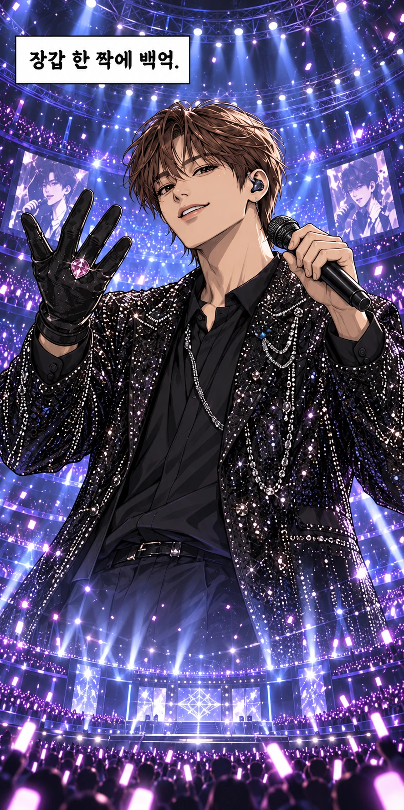
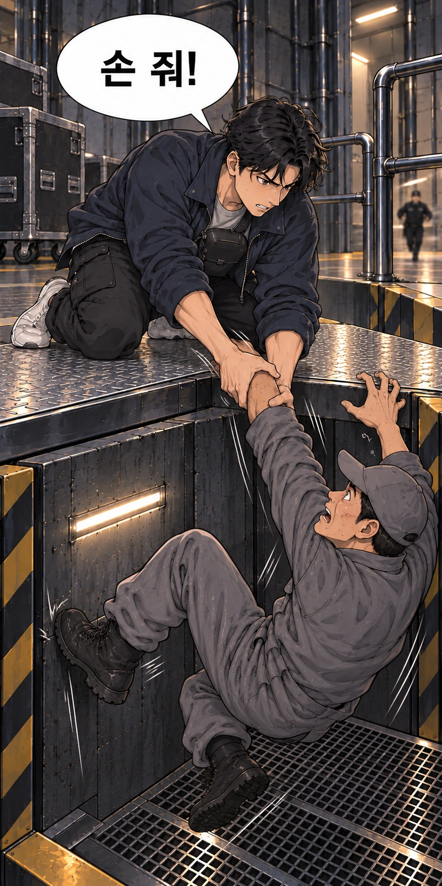
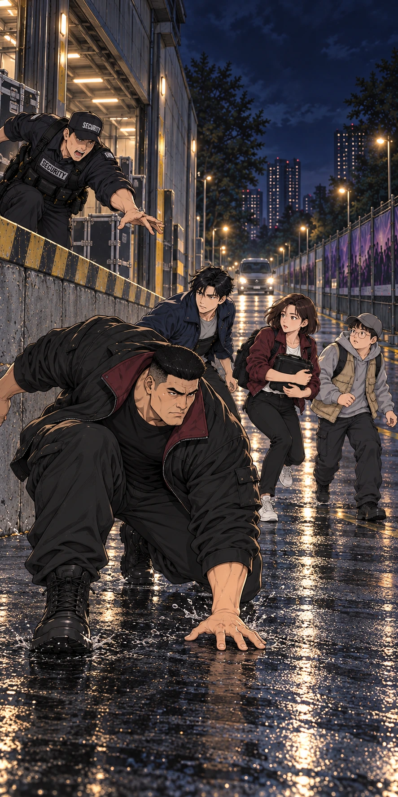

<!doctype html><html lang="ko"><meta charset="utf-8"><meta name="viewport" content="width=device-width,initial-scale=1"><title>DESPERADO · 사십 초 뒤 · v15</title><style>*{box-sizing:border-box}html{background:#17191d;scroll-behavior:smooth}body{margin:0;font-family:"Malgun Gothic",system-ui,sans-serif;color:#222}header,main,footer{max-width:900px;margin:auto;background:#fff}header{padding:30px 24px 24px}h1{margin:0;font-size:28px;letter-spacing:4px}header p{font-size:14px;color:#777;margin:10px 0}nav{display:flex;gap:16px;flex-wrap:wrap;font-size:13px}a{color:#803c51}main{overflow:hidden;padding-bottom:40px}.art{display:block;padding:0;border:0;background:white;width:100%;position:relative;overflow:hidden;cursor:zoom-in;line-height:0;margin:0 0 34px;touch-action:pan-y pinch-zoom}.art:focus-visible{outline:3px solid #bc667b;outline-offset:-3px}.art img{display:block;width:100%;height:auto}.art.fragment{aspect-ratio:var(--w)/var(--h)}.fragment img{position:absolute;left:0;top:var(--top)}.hero{margin-bottom:75px}.breath{margin-bottom:90px}footer{padding:30px 24px 65px;font-size:14px;line-height:1.8}dialog{border:0;border-radius:10px;padding:0;width:min(1050px,96vw);max-height:94vh;background:#fff;color:#222}dialog::backdrop{background:#000d}.dialogbar{position:sticky;top:0;background:white;padding:12px 16px;display:flex;justify-content:space-between;gap:12px;z-index:2;border-bottom:1px solid #ddd}.dialogbar button{border:1px solid #bbb;background:#fff;border-radius:5px;padding:7px 14px;font:inherit}#zoomArt{width:100%;height:auto;display:block}#lines{padding:18px 24px 30px;line-height:1.8;font-size:20px}#lines p{margin:8px 0}#lines b{font-size:15px;color:#73505a;margin-right:12px}.small{font-size:13px;color:#777}@media(max-width:500px){header{padding:22px 18px}h1{font-size:25px}.art{margin-bottom:24px}.hero{margin-bottom:58px}.breath{margin-bottom:70px}footer{padding:26px 18px 50px}nav{gap:12px}#lines{padding:12px 16px 22px;font-size:19px}}#zoomFrame{position:relative;overflow:hidden}#zoomFrame.fragment{aspect-ratio:var(--w)/var(--h)}</style><aside id="v16-rewrite-notice" style="max-width:900px;margin:18px auto;padding:18px 22px;background:#f2e7d7;color:#29272a;font:16px/1.8 system-ui">이전v15의 인양 작전은 서사 채택을 철회했습니다. <a href="../webtoon-v16/" style="color:#824753;font-weight:bold">새로 재구성·제작한 v16 읽기</a></aside><header><h1>DESPERADO</h1><p>EP01 · 사십 초 뒤</p><nav><a href="production.html">콘티·제작 검수</a><span class="small">컷을 누르면 확대와 큰 글씨 대사</span></nav></header><main><button type="button" class="art hero" style="--w:887;--h:1774;--top:0.00000%;" id="cut-1" data-block="0" aria-label="01컷 크게 보기"></button><button type="button" class="art fragment" style="--w:887;--h:1331;--top:-33.28325%;" id="cut-2" data-block="1" aria-label="02–04컷 크게 보기"></button><button type="button" class="art" style="--w:887;--h:1774;--top:0.00000%;" id="cut-5" data-block="2" aria-label="05–08컷 크게 보기"></button><button type="button" class="art" style="--w:887;--h:1774;--top:0.00000%;" id="cut-9" data-block="3" aria-label="09–12컷 크게 보기"></button><button type="button" class="art" style="--w:1024;--h:1536;--top:0.00000%;" id="cut-13" data-block="4" aria-label="13–16컷 크게 보기"></button><button type="button" class="art" style="--w:894;--h:1759;--top:0.00000%;" id="cut-17" data-block="5" aria-label="17–20컷 크게 보기"></button><button type="button" class="art" style="--w:887;--h:1774;--top:0.00000%;" id="cut-21" data-block="6" aria-label="21–24컷 크게 보기"></button><button type="button" class="art breath" style="--w:887;--h:1774;--top:0.00000%;" id="cut-25" data-block="7" aria-label="25–28컷 크게 보기"></button><button type="button" class="art" style="--w:887;--h:1774;--top:0.00000%;" id="cut-29" data-block="8" aria-label="29–32컷 크게 보기"></button><button type="button" class="art" style="--w:883;--h:1781;--top:0.00000%;" id="cut-33" data-block="9" aria-label="33–36컷 크게 보기"></button><button type="button" class="art" style="--w:887;--h:1774;--top:0.00000%;" id="cut-37" data-block="10" aria-label="37–40컷 크게 보기"></button><button type="button" class="art" style="--w:887;--h:1774;--top:0.00000%;" id="cut-41" data-block="11" aria-label="41–44컷 크게 보기"></button><button type="button" class="art breath" style="--w:887;--h:1774;--top:0.00000%;" id="cut-45" data-block="12" aria-label="45–48컷 크게 보기"></button><button type="button" class="art" style="--w:904;--h:1740;--top:0.00000%;" id="cut-49" data-block="13" aria-label="49–52컷 크게 보기"></button><button type="button" class="art breath" style="--w:870;--h:1808;--top:0.00000%;" id="cut-53" data-block="14" aria-label="53–56컷 크게 보기"></button><button type="button" class="art" style="--w:887;--h:1774;--top:0.00000%;" id="cut-57" data-block="15" aria-label="57–60컷 크게 보기"></button><button type="button" class="art fragment" style="--w:887;--h:1128;--top:0.00000%;" id="cut-61" data-block="16" aria-label="61–63컷 크게 보기"></button><button type="button" class="art hero" style="--w:887;--h:1774;--top:0.00000%;" id="cut-64" data-block="17" aria-label="64컷 크게 보기"></button><button type="button" class="art breath" style="--w:887;--h:1774;--top:0.00000%;" id="cut-65" data-block="18" aria-label="65–68컷 크게 보기"></button><button type="button" class="art" style="--w:887;--h:1774;--top:0.00000%;" id="cut-69" data-block="19" aria-label="69–72컷 크게 보기"></button><button type="button" class="art" style="--w:848;--h:1855;--top:0.00000%;" id="cut-73" data-block="20" aria-label="73–76컷 크게 보기"></button><button type="button" class="art fragment" style="--w:892;--h:451;--top:0.00000%;" id="cut-77" data-block="21" aria-label="77컷 크게 보기"></button><button type="button" class="art hero" style="--w:887;--h:1774;--top:0.00000%;" id="cut-78" data-block="22" aria-label="78컷 크게 보기"></button><button type="button" class="art fragment" style="--w:892;--h:813;--top:-116.72817%;" id="cut-79" data-block="23" aria-label="79–80컷 크게 보기"></button><button type="button" class="art" style="--w:919;--h:1711;--top:0.00000%;" id="cut-81" data-block="24" aria-label="81–84컷 크게 보기"></button><button type="button" class="art breath" style="--w:901;--h:1746;--top:0.00000%;" id="cut-85" data-block="25" aria-label="85–88컷 크게 보기"></button></main><footer>다음 화에 계속<br><a href="production.html">제작·검수 기록</a> · <a href="pages.html">원화 페이지 보기</a> · <a href="https://desperado-moving-webtoon.ktsjjcap.workers.dev/episodes/ep01/plot-v14/benchmark.html">3작품 비교 검수</a></footer><dialog id="zoom"><div class="dialogbar"><b id="zoomTitle"></b><button type="button" id="closeZoom">닫기</button></div><div id="zoomFrame"></div><div id="lines"></div></dialog><script>const data={"0": {"src": "images/hero-1.webp", "title": "01컷 크게 보기", "lines": [{"who": "내레이션", "text": "장갑 한 짝에 백억."}], "w": 887, "h": 1774, "y": 0, "sh": 1774}, "1": {"src": "images/page-01.webp", "title": "02–04컷 크게 보기", "lines": [{"who": "락스", "text": "우린 하역장까지만 들어갈 수 있어."}, {"who": "찬호", "text": "백억이면 손 씻을 때도 경비 붙겠네."}, {"who": "원타치", "text": "넌 손부터 씻어."}, {"who": "락스", "text": "들어갈 때도, 나올 때도 서쪽이야."}], "w": 887, "h": 1331, "y": 443, "sh": 1774}, "2": {"src": "images/page-02.webp", "title": "05–08컷 크게 보기", "lines": [{"who": "딱지", "text": "보석 검사는 못 속여."}, {"who": "딱지", "text": "무게 검사만 넘겨. 다음 검사 전엔 빠지고."}, {"who": "찬호", "text": "형, 나 떨어뜨리면 백억 날아간다."}, {"who": "원타치", "text": "장갑은 내가 받을게."}, {"who": "뻐꾸기", "text": "이 카메라만 사십 초. 연장은 안 돼."}], "w": 887, "h": 1774, "y": 0, "sh": 1774}, "3": {"src": "images/page-03.webp", "title": "09–12컷 크게 보기", "lines": [{"who": "딱지", "text": "물건은 찬호. 문은 나. 형은 찬호 잡아줘."}, {"who": "찬호", "text": "끝나면 치킨?"}, {"who": "원타치", "text": "내 건 뼈 있는 거."}, {"who": "내레이션", "text": "공연장 서쪽 하역장"}], "w": 887, "h": 1774, "y": 0, "sh": 1774}, "4": {"src": "images/page-04.webp", "title": "13–16컷 크게 보기", "lines": [{"who": "직원", "text": "두 분은 이 선 안쪽으로 들어가시면 안 됩니다."}, {"who": "뻐꾸기", "text": "저쪽도 하역장이네."}], "w": 1024, "h": 1536, "y": 0, "sh": 1536}, "5": {"src": "images/page-05.webp", "title": "17–20컷 크게 보기", "lines": [{"who": "의상 직원", "text": "손목이 좀 헐겁죠? 잠깐만요."}, {"who": "딱지", "text": "이거 찾으세요?"}, {"who": "담당자", "text": "아, 감사합니다."}, {"who": "찬호", "text": "이제?"}, {"who": "딱지", "text": "잠깐."}], "w": 894, "h": 1759, "y": 0, "sh": 1759}, "6": {"src": "images/page-06.webp", "title": "21–24컷 크게 보기", "lines": [{"who": "찬호", "text": "너 없었으면 인사할 뻔했다."}, {"who": "딱지", "text": "나중에 해."}, {"who": "담당자", "text": "확인하고 보관하겠습니다."}], "w": 887, "h": 1774, "y": 0, "sh": 1774}, "7": {"src": "images/page-07.webp", "title": "25–28컷 크게 보기", "lines": [{"who": "딱지", "text": "펜은 챙기셔야죠."}, {"who": "딱지", "text": "이제 가."}], "w": 887, "h": 1774, "y": 0, "sh": 1774}, "8": {"src": "images/page-08.webp", "title": "29–32컷 크게 보기", "lines": [{"who": "딱지", "text": "키는 진열장 거야. 바닥은 못 꺼."}, {"who": "딱지", "text": "가슴 쪽도 잠겼어. 가."}, {"who": "뻐꾸기", "text": "시작."}], "w": 887, "h": 1774, "y": 0, "sh": 1774}, "9": {"src": "images/page-09.webp", "title": "33–36컷 크게 보기", "lines": [], "w": 883, "h": 1781, "y": 0, "sh": 1781}, "10": {"src": "images/page-10.webp", "title": "37–40컷 크게 보기", "lines": [{"who": "찬호", "text": "잠깐."}], "w": 887, "h": 1774, "y": 0, "sh": 1774}, "11": {"src": "images/page-11.webp", "title": "41–44컷 크게 보기", "lines": [{"who": "찬호", "text": "됐다."}, {"who": "뻐꾸기", "text": "삼 초."}, {"who": "가수", "text": "한 곡 더 갈까요?"}], "w": 887, "h": 1774, "y": 0, "sh": 1774}, "12": {"src": "images/page-12.webp", "title": "45–48컷 크게 보기", "lines": [{"who": "무대감독", "text": "장갑 다시 올려 주세요. 앙코르 갑니다."}, {"who": "담당자", "text": "어? 키가…"}, {"who": "뻐꾸기 무전", "text": "장갑 다시 찾는대. 지금."}, {"who": "보안", "text": "보관실부터 막아. 양쪽 계단도."}, {"who": "관제", "text": "침입 확인. 세 명입니다."}], "w": 887, "h": 1774, "y": 0, "sh": 1774}, "13": {"src": "images/page-13.webp", "title": "49–52컷 크게 보기", "lines": [{"who": "딱지", "text": "사람 와."}, {"who": "딱지", "text": "서쪽으로—"}], "w": 904, "h": 1740, "y": 0, "sh": 1740}, "14": {"src": "images/page-14.webp", "title": "53–56컷 크게 보기", "lines": [{"who": "찬호", "text": "서쪽 끝났어."}, {"who": "뻐꾸기 무전", "text": "락스 형, 차 동쪽으로 돌려요."}, {"who": "찬호", "text": "아까 저거, 반대편까지 갔지?"}, {"who": "딱지", "text": "돌아갈 생각이야?"}, {"who": "뻐꾸기", "text": "다음 전환, 곧 들어가요."}, {"who": "딱지", "text": "멈췄어. 지금 타."}], "w": 870, "h": 1808, "y": 0, "sh": 1808}, "15": {"src": "images/page-15.webp", "title": "57–60컷 크게 보기", "lines": [{"who": "경비", "text": "동쪽으로 돌려. 승강대 앞 막아."}], "w": 887, "h": 1774, "y": 0, "sh": 1774}, "16": {"src": "images/page-16.webp", "title": "61–63컷 크게 보기", "lines": [{"who": "원타치", "text": "건너."}, {"who": "직원", "text": "뭐야—"}], "w": 887, "h": 1128, "y": 0, "sh": 1774}, "17": {"src": "images/hero-64.webp", "title": "64컷 크게 보기", "lines": [{"who": "찬호", "text": "손 줘!"}], "w": 887, "h": 1774, "y": 0, "sh": 1774}, "18": {"src": "images/page-17.webp", "title": "65–68컷 크게 보기", "lines": [{"who": "딱지", "text": "발 디뎌요. 여기!"}, {"who": "경비", "text": "괜찮으세요?"}, {"who": "다른 경비", "text": "저쪽!"}], "w": 887, "h": 1774, "y": 0, "sh": 1774}, "19": {"src": "images/page-18.webp", "title": "69–72컷 크게 보기", "lines": [{"who": "원타치", "text": "닫아."}, {"who": "뻐꾸기", "text": "차 온다. 빨리!"}], "w": 887, "h": 1774, "y": 0, "sh": 1774}, "20": {"src": "images/page-19.webp", "title": "73–76컷 크게 보기", "lines": [{"who": "딱지", "text": "저 문도 막혔어."}, {"who": "찬호", "text": "문으로 나가야 돼?"}, {"who": "딱지", "text": "가방부터 줘."}], "w": 848, "h": 1855, "y": 0, "sh": 1855}, "21": {"src": "images/page-20.webp", "title": "77컷 크게 보기", "lines": [], "w": 892, "h": 451, "y": 0, "sh": 1762}, "22": {"src": "images/hero-78.webp", "title": "78컷 크게 보기", "lines": [], "w": 887, "h": 1774, "y": 0, "sh": 1774}, "23": {"src": "images/page-20.webp", "title": "79–80컷 크게 보기", "lines": [{"who": "락스", "text": "타!"}], "w": 892, "h": 813, "y": 949, "sh": 1762}, "24": {"src": "images/page-21.webp", "title": "81–84컷 크게 보기", "lines": [{"who": "락스", "text": "다섯. 간다."}, {"who": "딱지", "text": "아까 왜 멈췄어?"}, {"who": "찬호", "text": "안에 클립이 있더라. 그것도 옮겨야지."}], "w": 919, "h": 1711, "y": 0, "sh": 1711}, "25": {"src": "images/page-22.webp", "title": "85–88컷 크게 보기", "lines": [{"who": "원타치", "text": "다음엔 네가 나 들어."}, {"who": "찬호", "text": "…반만 들면 안 돼?"}, {"who": "뻐꾸기", "text": "치킨… 아직 먹어요?"}, {"who": "원타치", "text": "두 마리."}, {"who": "보안", "text": "작업자 명단, 다시 띄워."}, {"who": "보안", "text": "이 사람부터 찾아."}], "w": 901, "h": 1746, "y": 0, "sh": 1746}};const box=document.getElementById("zoom");document.querySelectorAll("[data-block]").forEach(el=>el.addEventListener("click",()=>{const d=data[el.dataset.block];document.getElementById("zoomTitle").textContent=d.title;document.getElementById("zoomArt").src=d.src;const frame=document.getElementById("zoomFrame");frame.className=(d.h!==d.sh?"fragment":"");frame.style.setProperty("--w",d.w);frame.style.setProperty("--h",d.h);frame.style.setProperty("--top",(-d.y/d.h*100)+"%");const lines=document.getElementById("lines");lines.replaceChildren();d.lines.forEach(l=>{const p=document.createElement("p"),b=document.createElement("b");b.textContent=l.who;p.append(b,document.createTextNode(l.text));lines.append(p)});if(!d.lines.length)lines.textContent="대사 없는 장면";box.showModal()}));document.getElementById("closeZoom").onclick=()=>box.close();box.addEventListener("click",e=>{if(e.target===box)box.close()});</script></html>